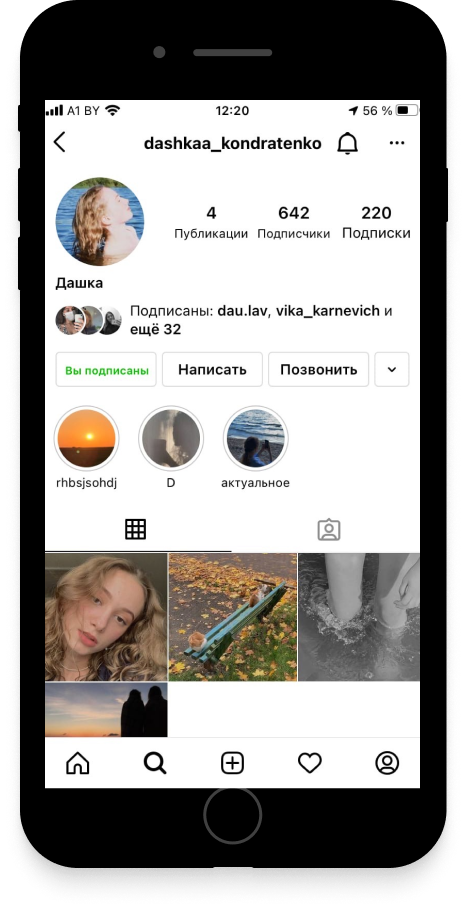

Дашка Кондратенко
Встречайте Красотку!
Наши Дни
Дарья родилась в замечательном городе Беларуси - Быхове. Я там не была, но надеюсь, что побываю:) В свои 18 она выглядит обалденно (Вы только посмотрите на волнистые волосы - и она их даже не крутила!!!)
P.S. Кстати, по гороскопу Даша Близнецы, наверное, поэтому она смело высказывает своё мнение!
Детство
Она с самого детства чувствовала себя Принцессой (смотри фото -->)
А ещё Дашка с самого детства поёт, и делает это на все 100!!!
Прошлым летом она с группой из Академии выступала на Славянском базаре.
P.S. Дарья всегда посещает репетиции, потому что они ей очень нравятся.
Галерея

